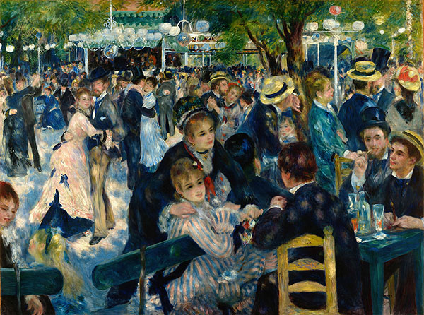
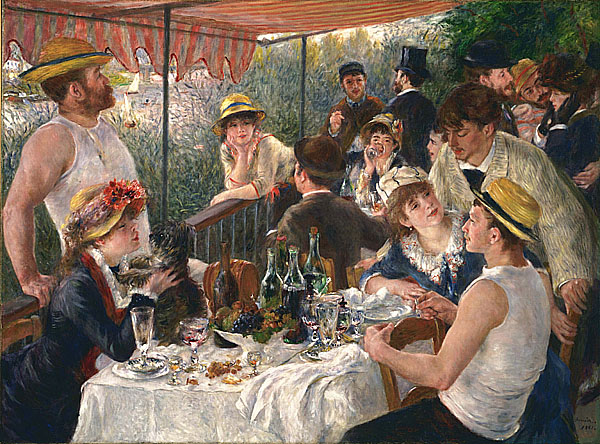
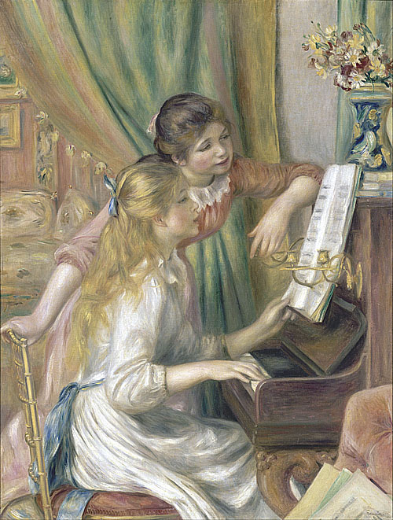

印象派藝術家介紹

雷諾瓦（Pierre-Auguste Renoir，1841年-1919年）是法國印象派藝術家之一，他以他充滿活力和明亮色彩的作品而聞名。他的畫風溫暖、富有情感，常以人物和社交場景為主題，並以其對光線和色彩的敏感度而受到讚揚。 雷諾瓦的早期作品受到巴黎古典藝術學院的影響，他受到拉斐爾和喬托的啟發，嘗試描繪優雅的人物和古典主題。然而，他後來轉向了印象派的風格，更注重捕捉光線和色彩的瞬間效果，並將自然的變化和光影的模糊效果融入他的作品中。 雷諾瓦的作品展示了他對人體和自然光的細膩觀察，以及他對日常生活和社交場景的興趣。他以他富有情感的筆觸和溫暖的調色板，描繪了人們的歡樂和活力。 雷諾瓦是印象派運動的關鍵人物之一，他的作品在當時引起了軒然大波。他與莫內、德加等藝術家一起展示了印象派藝術的新風格和觀點。儘管他的視力在晚年受到了嚴重的衰退，但他仍然繼續創作，並在藝術界享有盛譽。
-

《煎餅磨坊的舞會》 《船上的午宴》 《彈鋼琴的少女》